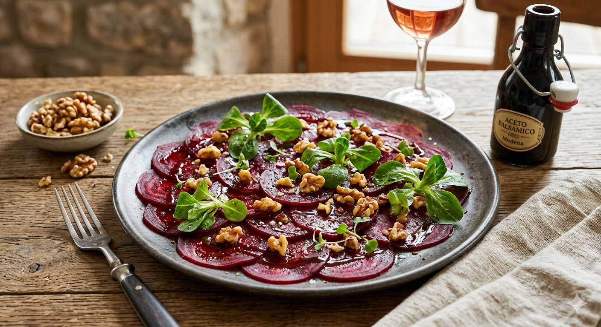
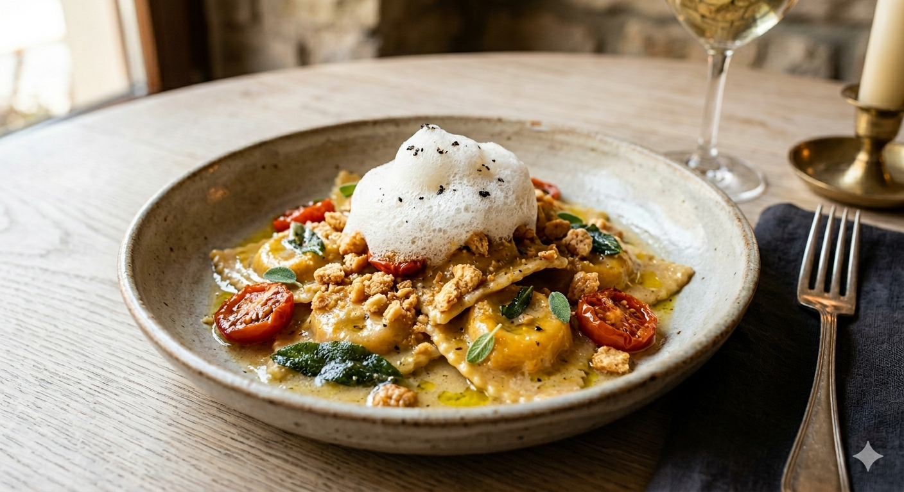

Bistro
0511Bites
Alle Artikel sind inklusive Mehrwertsteuer
Vorpeisen

01.Rote-Bete-Carpaccio mit Walnüssen & Balsamico
Hauchdünn aufgeschnittene, gekochte Bio-Rote-Bete, mariniert mit hochwertigem Olivenöl, Balsamico, gerösteten Walnüssen und frischem Feldsalat.€12.5
02.Rote-Bete-Carpaccio mit Walnüssen & Balsamico
Hauchdünn aufgeschnittene, gekochte Bio-Rote-Bete, mariniert mit hochwertigem Olivenöl, Balsamico, gerösteten Walnüssen und frischem Feldsalat.€12.5
Hauptgänge

01.Duett vom Kräuterseitling
Gebratenes Pilz-Steak und Wellington-Schnittchen auf einer kräftigen Portwein-Reduktion, serviert mit Pastinakenpüree und glasierten Urkarotten€25.5
02.Hausgemachte Kürbis-Agnolotti
in Salbeibutter-Emulsion mit Amarettini-Crunch, geschmolzenen Kirschtomaten und feinem Trüffelschaum€32.5